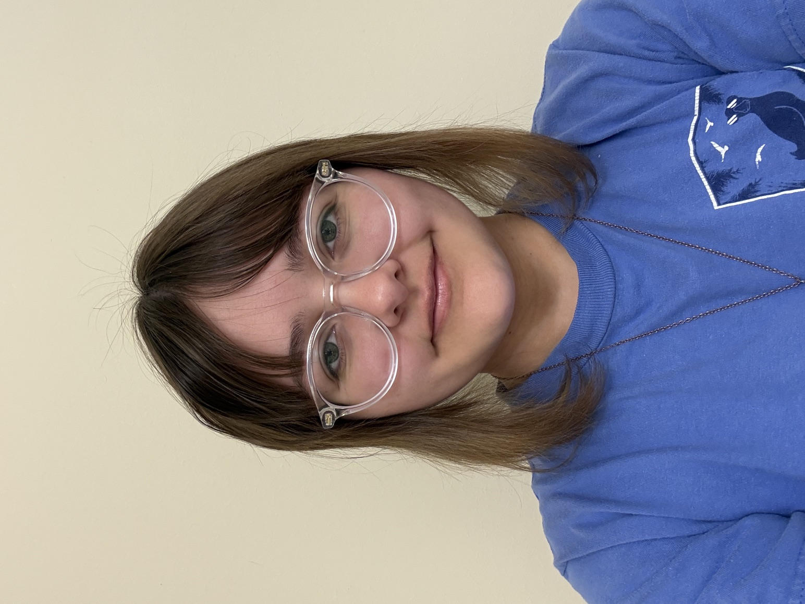

Introduction
Natalia Dudley | Nice Dragonfly

Hello! My name is Natalia Dudley. I’m 20 years old and in my third year at UNC Charlotte. I’m a computer science major with a concentration in software engineering.
- Personal Background: I grew up in a town called Wheaton in the Chicago suburbs. My family moved to Holly Springs, North Carolina, in 2021, when I was in my sophomore year of high school. I’ll never get used to the weather here!
- Professional Background: I’m a tutor here at UNC Charlotte.
- Academic Background: Computer Science, Spring 2028
- Primary Work Computer: Acer Swift SFG16-72T
- Primary Work Location: Fretwell
- Alternate Computer: I can borrow one from the library
- Courses I’m taking & why:
- ITSC3688H - Computing and AI: Ethics, Society & Communication: Required for my major, honors course
- ITIS3135 - Front-End Web Application Development: Required for my concentration
- ITSC2175 - Logic and Algorithms: Required for my major
- MATH2164 - Matrices & Linear Algebra: Required for my major
- ITIS3310 - Software Architecture & Design: Required for my concentration
“Lose yourself to dance!”
- Pharrell Williams